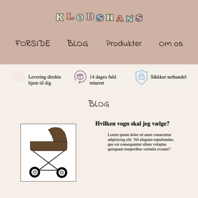
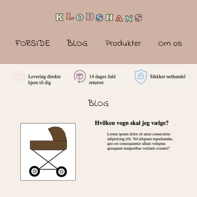

Portfolio
Tema 2 - Grundlæggende Web
I Tema 2 lærte vi om de diverse filformater vi bruger til web, om designkonventioner, gestaltprincipper og at arbejde i Figma. I Figma arbejdede vi med bl.a styletiles og wireframes.
Inden for kodning, lærte vi om semantisk markup, codereuse, samt opsætningen af en hierakisk mappestruktur. Vi lærte at kode responsive hjemmesider med en "mobile first" tilgang, ved brug af CSS grids, flexbokse og media queries.
Tema 3 - Grundlæggende UX/UI
I Tema 3 lærte vi om de basale udvilklingsmetoder og modeller der bruges i erhvervet. Vi lærte om UX/UI konventioner, at lave prototyper samt usability og testing. I dette tema, var der især fokus på vores designproces, der indeholder bl.a research, ideudvikling, wireframing, prototyper og testing.
I denne proces, gjorde vi især brug af inspirationssøgning, grafisk analyse, ideudvikling, sketching, moodboards, mock-up og styletiles.
Tema 4 - Grundlæggende Animation
Tema 4 involverede et væld af ny læring indenfor både kodning og design. Under dette tema blev vi introduceret til JavaScript, CSS animationer og Adobe Illustratior. Læringen på dette tema, foregik, stort set, parrallelt med at vi arbejdede på temaopgaven, spilsitet. Vi lærte om spildesign, herunder at designe UI, baggrunde og spil-elementer. Vi blev introduceret til nye idegenereringsteknikker og metoder, så som 'paperprototypes' og skitseringsteknikker.
Indenfor kodningen, lærte vi, udover JavaScript, om CSS positionering og CSS animationer.
 

Tema 5 - Grundlæggende Indhold
Under Tema 5 blev vi introduceret til to opgaver, der skulle laves over forløbets varighed. Vi skulle først lave et passionssite, og derefter et virksomhedssite. Begge opgaver kom med en liste krav, der ligesom i de forrige temaer, medførte ny læring.
I forbindelse med disse opgaver, lærte vi metoder til at producere digitalt indhold, herunder præproduktion, selve produktionen og postproduktion. Dette bestod bl.a af storyboards, interview-teknikker, optagelse af ekstern lyd, redigering af vektorgrafik og videoredigering. I den forbindelse blev vi introduceret til Premiere Pro, After Effects og Lottiefiles.
Derudover byggede vi videre på vores viden om erhvervets digitale udevkslingsformater, med læring om webP,wav, mp4, mp3, jpeg og png.
Vi lærte principper og teorier om brugeroplevelsen, samt brugerens samspil med digitale medieproduktioner. Her lærte vi om diverse tests der bruges til at undersøge brugerens opfattele af designet.